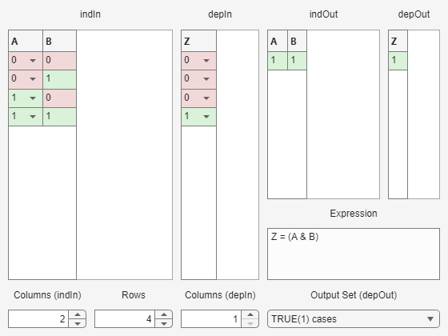

matEspresso Examples
The function matEspresso is a MATLAB wrapper for the venerable Espresso heuristic logic minimizer, a widely used tool for efficient minimization of PLA (Programmable Logic Array) truth tables. matEspresso provides a MATLAB-native interface for minimization of data in matrices or tables (rather than long character vectors).
The companion function matEspressoGUI is an interactive GUI that demonstrates matEspresso usage via editable input tables and live-updating of the minimized output tables and expressions.
Contents
- Espresso: Download and Installation
- Terminology
- Only indIn Argument
- Both indIn and depIn Arguments
- Input Arguments: Numeric
- Input Arguments: Table
- Input Arguments: Character
- Input arguments: Categorical
- Optional Arguments
- Output 1: indOut
- Output 2: depOut
- Output 3: expr
- Output 4: debug
- Temporary File
- matEspressoGUI Interactive Demo
Espresso: Download and Installation
Espresso is not shipped with MATLAB. You must install an Espresso executable and ensure it is discoverable by matEspresso. For example, this Win10-compatible version: https://github.com/Gigantua/Espresso (click on "Releases" to find an already compiled Espresso.exe file).
matEspresso attempts to locate the Espresso executable in this order:
- By using the full path provided using option exePath.
- By searching the MATLAB search path, for example the current folder or any folder added using ADDPATH.
- Otherwise it is assumed that matEspresso is on the system path.
Note: the executable file must have execute permissions (e.g. on Linux/macOS use chmod +x Espresso if required).
Terminology
Terms commonly used in PLA contexts are easily confused with existing terms used in MATLAB that have very different meanings. For that reason we define the following two universal terms in place of the confusing ones:
- "independent-variable" aka input, variable, argument, premise, predicate, condition, domain variable, input signal, etc.
- "dependent-variable" aka output, function, function value, consequent, result, response, target variable, output signal, etc.
Only indIn Argument
With one input argument indIn is interpreted as the true cases for a single implicit dependent-variable, i.e. each row of indIn is a minterm where the dependent-variable is true (any missing rows are implicitly false cases). Each column of indIn represents one independent-variable.
The output values are 0=false, 1=true, 2=don't-care (DC).
For example two independent-variables and one (implicit) dependent-variable:
indIn = [true,false; true,true]
indOut = matEspresso(indIn)
%
indIn = 2×2 logical array 1 0 1 1 indOut = 1×2 uint8 row vector 1 2
Both indIn and depIn Arguments
With two input arguments, depIn explicitly defines the required true/false/don't-care values for each row of the truth table. Note that indIn and depIn must have the same number of rows. Each column of indIn represents one independent-variable, whereas each column of depIn represents one dependent-variable.
For example two independent-variables and one (explicit) dependent-variable:
indIn = [true,false; true,true; false,true; false,false] depIn = [true; true; false; false] indOut = matEspresso(indIn,depIn)
indIn = 4×2 logical array 1 0 1 1 0 1 0 0 depIn = 4×1 logical array 1 1 0 0 indOut = 1×2 uint8 row vector 1 2
Input Arguments: Numeric
The above example use logical matrices for indIn, but for extra control and versatility indIn supports several other input classes.
A numeric indIn matrix supports the following three values:
false: 0
true: 1
DC: 2
A numeric depIn matrix supports the following six values:
false: 0 == 3
true: 1 == 4
DC: 2
ignore: 5
For example two independent-variables and one (explicit) dependent-variable:
indIn = [1,2; 1,1; 0,0] depIn = [1; 1; 0] indOut = matEspresso(indIn,depIn)
indIn =
1 2
1 1
0 0
depIn =
1
1
0
indOut =
1×2 uint8 row vector
1 2
Input Arguments: Table
Tables must contain only numeric or logical columns/variables, using only the values given above. Their column/variable names must be unique and must be valid variable names. For example (using the same values as above):
indIn = array2table(indIn, 'VariableNames',{'A','B'}) depIn = array2table(depIn, 'VariableNames',{'Z'}) indOut = matEspresso(indIn,depIn)
indIn =
3×2 table
A B
_ _
1 2
1 1
0 0
depIn =
3×1 table
Z
_
1
1
0
indOut =
1×2 table
A B
_ _
1 2
Input Arguments: Character
A character indIn matrix supports the following five characters:
false: '0'
true: '1'
DC: '2' == '-' == '?'
A character depIn matrix supports the following nine characters:
false: '0' == '3'
true: '1' == '4'
DC: '2' == '-' == '?'
ignore: '5' == '~'
For example two independent-variables and one (explicit) dependent-variable:
indIn = ['1-';'11';'00'] depIn = ['1';'1';'0'] indOut = matEspresso(indIn,depIn)
indIn =
3×2 char array
'1-'
'11'
'00'
depIn =
3×1 char array
'1'
'1'
'0'
indOut =
'1-'
Input arguments: Categorical
A categorical indIn matrix supports the following case-insensitive categories:
false: '0' == 'off' == 'no' == 'false'
true: '1' == 'on' == 'yes' == 'true'
DC: '2' == '-' == '?' == 'dc' == 'dontcare' == 'maybe'
A categorical depIn matrix supports the following case-insensitive categories:
false: '0' == '3' == 'off' == 'no' == 'false'
true: '1' == '4' == 'on' == 'yes' == 'true'
DC: '2' == '-' == '?' == 'dc' == 'dontcare' == 'maybe'
ignore: '5' == '~'
By default the output matrices use categories off, on, and DC.
For example two independent-variables and one (explicit) dependent-variable:
indIn = categorical({'On','DC';'On','On';'Off','Off'})
depIn = categorical({'On';'On';'Off'})
indOut = matEspresso(indIn,depIn)
indIn =
3×2 categorical array
On DC
On On
Off Off
depIn =
3×1 categorical array
On
On
Off
indOut =
1×2 categorical array
on DC
Optional Arguments
Options may be supplied either:
- as a scalar structure, or
- as name-value pairs.
Key/field names are case-insensitive. Text values preserve their case.
| Option | Type | Permitted values | Meaning | Espresso Command |
|---|---|---|---|---|
| exePath | char vector / string scalar | Full path text to the Espresso executable, e.g. "C:\Users\UserName\Espresso.exe" | The executable filepath. Otherwise matEspresso attempts automagic discovery of where the executable is located. | - |
| indNames | cellstr / string array / char matrix | One name for each column of indIn | Independent-variable names, used for output tables and 3rd output expr. Must not contain names from depNames. | - |
| depNames | cellstr / string array / char matrix | One name for each column of depIn | Dependent-variable names, used for output tables and 3rd output expr. Must not contain names from indNames. | - |
| outCats | cellstr / string array / char matrix | Three categories corresponding to false, true, and don't-care. | These categories are used iff the outputs are categorical. The default output categories are 'off', 'on', and 'DC'. | - |
| rmTemp | logical scalar | false, true (default) | By default the temporary .PLA file is deleted automagically. For debugging purposes or to increase processing speed it may be useful to retain the file: it can be deleted by the user or OS from tempdir (see 4th output debug.system.tempPLA). | - |
| simplify | logical scalar | false (default), true | Simplify the 3rd output expr using Symbolic Math Toolbox. | - |
| Dcheck | logical scalar | false (default), true | Enable Espresso consistency check. | '-Dcheck' |
| Dexact | logical scalar | false (default), true | Exact minimization. Slower but optimal. Cannot be combined with Efast. | '-Dexact' |
| Dopo | logical scalar | false (default), true | Enable phase assignment optimization. | '-Dopo' |
| Dpair | logical scalar | false (default), true | Enable pair minimization. | '-Dpair' |
| Efast | logical scalar | false (default), true | Fast heuristic mode. Cannot be combined with Dexact. | '-efast' |
| Eout | char vector / string scalar | 'f' = true-set (default), 'd' = don't-care-set, 'r' = false-set. Or any combination in that order, e.g. 'fd', 'fdr', 'dr', etc. | Controls which cover sets Espresso returns. | '-o' |
The Espresso options are intentionally exposed only at a high level. For advanced Espresso configuration, consider post-processing the PLA yourself, or extending the wrapper, or calling Espresso directly.
Output 1: indOut
A simplified set of cover patterns over the independent-variables. Each row represents one implicant/pattern. The output type matches the input type where practical:
- input numeric/logical matrix -> output uint8 matrix (using values 0, 1, and 2),
- input categorical matrix -> output categorical matrix (using option outCats),
- input character matrix -> output character matrix (using '0', '1', and '-'),
- input table -> table output with uint8 columns/variables (as above).
The above examples show indOut output.
Output 2: depOut
A matrix/table of the same row count as indOut indicating which patterns cover which dependent-variables. depOut returns the same classes and values as indOut described above.
Note: If multiple dependent-variables are detected but you request only one output argument then matEspresso issues a warning!
indIn = [1,2,1; 1,1,0; 0,0,1] depIn = [1,0; 0,1; 0,2] [indOut,depOut] = matEspresso(indIn,depIn)
indIn =
1 2 1
1 1 0
0 0 1
depIn =
1 0
0 1
0 2
indOut =
2×3 uint8 matrix
1 1 0
1 2 1
depOut =
2×2 uint8 matrix
0 1
1 0
Output 3: expr
A character vector containing one Boolean expression per dependent-variable, separated by newlines. Expressions use MATLAB logical syntax: ~ (NOT), & (AND), and | (OR). The independent-variable and dependent-variable names are obtained from either table columns/variables, or from options indNames & depNames, or are generated automagically. Product terms are parenthesized when they contain multiple literals.
[~,~,expr] = matEspresso(indIn,depIn)
expr =
'Y = (A & C)
Z = (A & B & ~C)'
Output 4: debug
A scalar structure containing diagnostic information:
- debug.options.user: user-provided options
- debug.options.used: normalized options actually used
- debug.system.(...): .PLA filepath, system command/status/output
- debug.raw.(...): normalized input and output matrices
- debug.time.(...): timing information
[~,~,~,dbg] = matEspresso(indIn,depIn) dbg.system.result dbg.time
dbg =
struct with fields:
options: [1×1 struct]
time: [1×1 struct]
system: [1×1 struct]
raw: [1×1 struct]
ans =
'.d 1
.r 3
.i 3
.o 2
.ilb A B C
.ob Y Z
.p 2
110 01
1-1 10
.e
'
ans =
struct with fields:
Espresso: 0.0749
matEspresso: 0.078606
Temporary File
matEspresso passes the input data to Espresso via a temporary .PLA file stored in tempdir. By default these are deleted after use (and might end up in the desktop's recycling bin). Note that you can:
- Use option rmTemp to control if this file is automatically deleted or not.
- Get the filepath from the 4th output debug.system.tempPLA.
- Set MATLAB's recycle state: https://www.mathworks.com/help/matlab/ref/recycle.html
matEspressoGUI Interactive Demo
matEspressoGUI provides an interactive UI that calls matEspresso on every uitable edit. One key difference is that indIn and depIn must be numeric/logical matrices or tables with numeric/logical columns/variables (categorical and character encodings are not accepted by the GUI).
matEspressoGUI([0,0;0,1;1,0;1,1],[0;0;0;1])